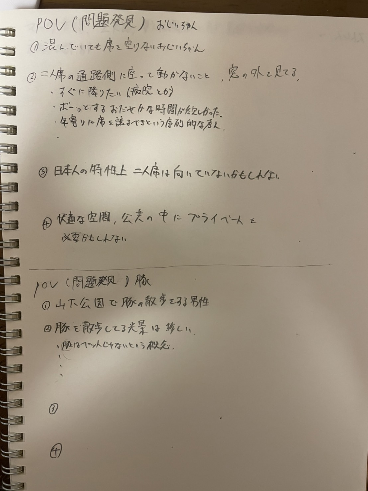

課題
決定した課題
・バスにて、二人席を一人で座っている人を何とかする方法はないか。
考えた解決策
・誰もがわかるピクトグラムを作る。
スケッチと完成品


POV
 ・バスの中に二人で座る席があって、その通路側に一人座って占領している人がいた。・もしかしたらその人にそうせざるを得ないほどの特別な理由があるのではないか。
・特定の個人の行為を対象にすると可能性が無限に広がるため、警告より推奨の看板にしようと結論付けた。
感想
・課題設定の難易度が高かったし、課題を解決するためにつくるものも難易度が高かった。・3Dプリントやレーザーカッターで作れるものには限度があるし、バスにおける課題解決にはつながらないかもとナーバスになった。